LPV Analysis
Contents
Problem Statement
The following example illustrates how the LPV approach can help to analyze a subtle difference between two parameter dependent systems.
Consider a first order Linear Time-Invariant (LTI) system G:

and a time-varying parameter 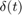, subject to 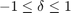 and 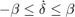, in a parallel interconnection as shown in Figure 1.

Figure 1: A parallel interconnection of two first order systems.
The parallel signal paths in Figure 1 describe two systems: 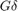 and 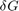. The systems differ only in the position of the 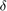 parameter. In one system is applied to the input of 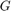, while it is applied to the output of in the other. The output of the interconnection, 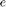, is the difference between the outputs of the two systems.
Question: Is there any difference between placing the scalar before or after in the signal path?
Modeling
The following code buils up the system G, the time-varying parameter , and the interconnection shown in Figure 1:
% Define the LTI System G G = ss(-1,1,1,0); % Define a scalar parameter 'delta' with values at 20 grid points between -1 and 1 Vals = linspace(-1,1,10); delta = pgrid('delta',Vals); % Define a parameter dependent system that describes the interconnection in Figure 1 H = delta*G-G*delta;
LTI Analysis
If is constant, then the gain from 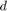 to can be easily computed. The follwing code computes the induced 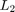 norm from to (i.e. the infinity norm of H), and plots how it changes as a function of the parameter .
% Compute the induced L2 norm of H n = norm(H,inf); % Plot how this norm varies with the value of the parameter delta lpvplot(n) title('Induced L_2 norm of H as a function of a constant \delta') ylabel('Induced L_2 norm of H')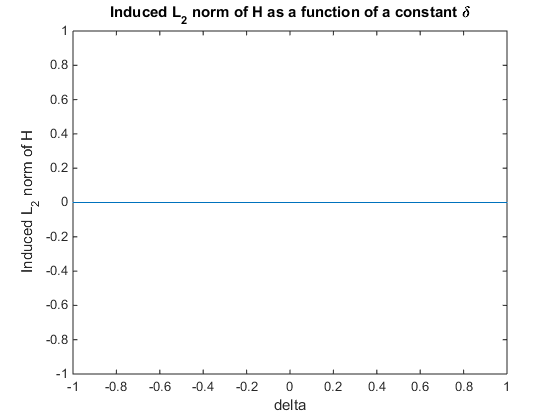
LTI Analysis Result
When is held constant, the induced norm of H is zero for all values of . Judging from the LTI analysis, the position of the parameter in the signal path has no effect. The LTI analysis is not capable of discriminating between the two systems: and .
LPV Analysis
Now compute the induced norm of H while taking into account the time-varying nature of . The following code computes the induced norm of H for any trajectory of which satisfies: and 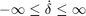.
syslpvnorm = lpvnorm(H)
syslpvnorm =
1.0024
LPV Analysis Results
The LPV analysis yields a non-zero induced norm for H when is allowed to vary with time. This means that there exists some trejectory of , subject to and . such that the two different signal paths through the interconnection in Figure 1 do not yield the same result.
The previous analysis assumed that could change arbitrarily fast with time, i.e. . Lets repeat the previous analysis with different bounds on the rate of variation of .
The following code computes the induced norm of H when the rate of variation of is constrained: , with 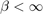.
% Define basis functions for the analysis algorithm. bf = basis(delta,'delta',1); Xb = [1;bf;bf^2;bf^3]; % Define a set of rate bounds (beta) to try: 15 values between 0.01 and 4. rb = logspace(-2,log10(4),15); for i=1:numel(rb) % Set the rate bounds of H to be +/- rb(i) H.Parameter.delta.RateBounds = [-rb(i) rb(i)]; % Compute the induced L2 norm of H, subject to a time-varying delta % lying between -1 and 1, with d/dt(delta) between +/- rb(i) NormBounds(i) = lpvnorm(H,Xb); end plot(rb,NormBounds) xlabel('Rate bound on \delta: -\beta \leq d/dt(\delta) \leq \beta') ylabel('Induced L_2 norm of H') title('Induced L_2 norm of H as a function of the rate bound on \delta')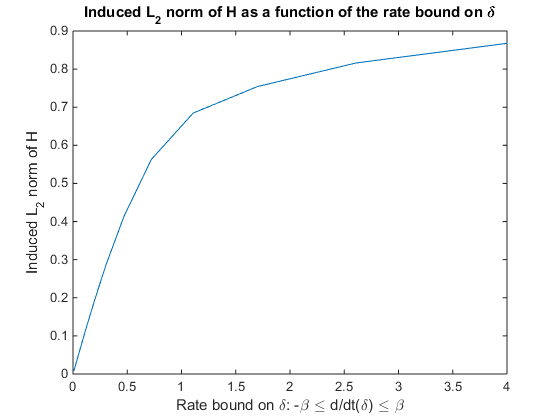
LPV simulation
Lets compare the time-domain response of the two signal paths n 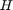, i.e. the systems and . We will use lpvstep to compare the parameter dependent step response:
Start by defining a time vector
t = 0:0.01:10;
Define a structure whose fields describe the trajectory of the parameter :
ptraj.time = t; ptraj.delta = sin(t);
Plot the step response of and when 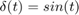. The time domain response highlights the difference between the two signal paths when is treated as a time-varying parameter.
lpvstep(delta*G,ptraj) hold on lpvstep(G*delta,ptraj) legend('\delta G','G\delta','location','best')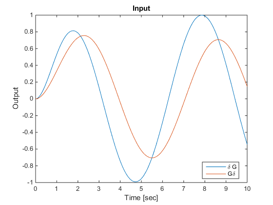
Summary
The preceding example demonstrates the power of the LPV approach, and its ability to augment traditional LTI analysis methods with results that take into account the time-varying nature of system components.
If the time varying nature of is ignored, an analysis in the LTI framework indicates that the two signal paths in Figure 1 are equivalent. However, if the the time-varying nature of is taken into account, an analysis in the LPV framework demonstrates that the position of in this interconnection can have a drastic effect on the results.
If varies slowly with time the difference between the two signal paths is small, e.g. its on the order of 1% when 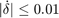. However, when changes faster, the difference becomes significant, e.g. the difference between the two singal paths is on the order of 20% when 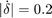, .
Reference
This example was published by Tamas Peni and Peter Seiler in [1]
- T. Peni, and P. Seiler, "Computation of a lower bound for the induced L2 norm of LPV systems," accepted to the American Control Conference, 2015.